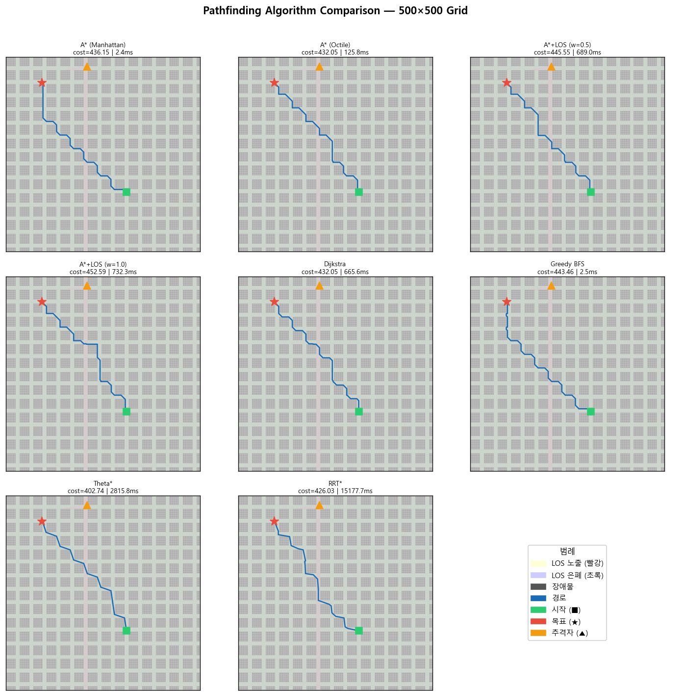
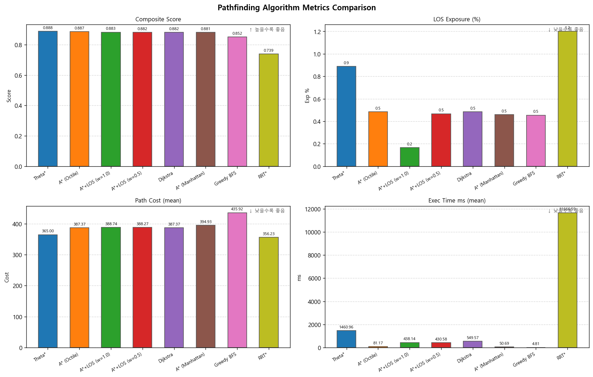

실험 환경
| 항목 | 값 |
|---|---|
| Grid 크기 | 500 × 500 |
| 건물 크기 (urban_block) | 25×25 셀 (gap 10셀) |
| 장애물 모드 | urban_block / random / pursuer_centered |
| Trial 수 (모드별) | 5 (시드 42~46) |
| 최소 시작-목표 거리 | Manhattan ≥ 250 |
| 알고리즘 수 | 8종 |
Benchmark
500×500 도시 그리드에서 8종 경로 탐색 알고리즘을 Occlusion-aware LOS 기준으로 비교 분석했습니다.
| 항목 | 값 |
|---|---|
| Grid 크기 | 500 × 500 |
| 건물 크기 (urban_block) | 25×25 셀 (gap 10셀) |
| 장애물 모드 | urban_block / random / pursuer_centered |
| Trial 수 (모드별) | 5 (시드 42~46) |
| 최소 시작-목표 거리 | Manhattan ≥ 250 |
| 알고리즘 수 | 8종 |
| 지표 | 설명 | 높을수록 좋음 |
|---|---|---|
| Composite Score | 가중합 종합 점수 | O |
| Success Rate | 경로 탐색 성공률 | O |
| Path Cost | 경로 유클리드 거리 합 | X |
| LOS Exposure % | 추격자 시야 노출 셀 비율 | X |
| Exec Time (ms) | 알고리즘 실행 시간 | X |
0.30 × (1 - norm_cost) + 0.25 × (1 - los_exposure / 100) + 0.20 × (1 - norm_time) + 0.15 × success_rate + 0.10 × (1 - norm_breaks)
녹색 = LOS 은폐 구역, 적색 = LOS 노출 구역, 파란 선 = 탐색 경로


| 순위 | 알고리즘 | Composite | Success | Cost | LOS Exp% | Time ms |
|---|---|---|---|---|---|---|
| 1 | Theta* | 0.888 | 100% | 365.0 | 0.9% | 1461 |
| 2 | A* (Octile) | 0.887 | 100% | 387.4 | 0.5% | 81 |
| 3 | A*+LOS (w=1.0) | 0.883 | 100% | 388.7 | 0.2% | 438 |
| 4 | A*+LOS (w=0.5) | 0.882 | 100% | 388.3 | 0.5% | 431 |
| 5 | Dijkstra | 0.882 | 100% | 387.4 | 0.5% | 550 |
| 6 | A* (Manhattan) | 0.881 | 100% | 394.9 | 0.5% | 51 |
| 7 | Greedy BFS | 0.852 | 100% | 435.9 | 0.5% | 5 |
| 8 | RRT* | 0.739 | 67% | 356.2 | 1.2% | 11667 |
복합 점수 0.888, 성공률 100%, LOS 노출 0.9%. Any-angle 경로로 가장 자연스러운 회피 경로를 생성합니다.
A*(Octile) 81ms, A*(Manhattan) 51ms로 온라인 재계획 루프에 유리합니다.
A*+LOS (w=1.0)은 LOS 노출 0.2%로 최저이지만 실행 시간이 길어 오프라인 계획에 적합합니다.
성공률 67%로 실패 케이스가 존재합니다. 비교 참고용으로 활용하는 것이 안전합니다.
500×500 도시 환경에서는 건물 블록(25×25 셀)이 촘촘하게 배치되어 추격자 시야가 도로·교차로 구간으로 제한됩니다. 경로 대부분이 건물 그림자 구역을 통과하고, 스폰 위치가 trial마다 달라 다양한 기하학적 케이스가 반영됩니다.
git clone https://github.com/alpha7179/IIT_DroneLearning.git pip install numpy matplotlib python python/scripts/run_pathfinding.py \ --grid-size 500 \ --n-trials 5 \ --seed 42 \ --out python/results/pathfinding_500/
결과 파일: benchmark_results.json, stats_summary.json, grid_comparison.png, metrics_bar.png